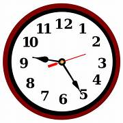

Time is a measure of the ongoing sequence of events, measured in seconds, minutes, hours, etc
1 hour = 60 minutes
1 minute = 60 seconds
1 day = 24 hours
To know more about this,please click on below click
PDF downloadTo see more images
ImagesTo practice problems on this topic click on below click
Practice problems